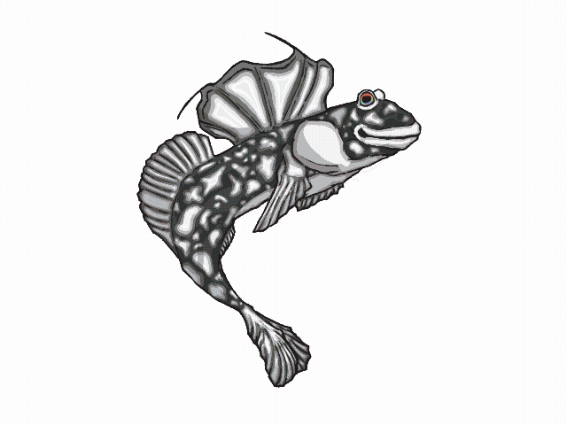

In world with AI everywhere and taking in everything as a referrence some artists want to protect their work
Hi! I'm Mudskippy the Mudskipper, your personal assistant. I noticed you want to post an image on insert social media platform here. Would you like to add an anti-AI watermark to this post? This watermark will keep your image safe from AI learning models. Want to try anti AI watermarking yourself? Click Here! Want to learn more about it? Keep reading!

Hello again! I'm Mudskippy the Mudskipper, I'm an AI chatbot who was also made with human creativity and art! AI can do many great things, like help identify cancers, take down fake news, create code, and make me (Marr: "18 Dangers of AI")! But AI also has drawbacks; it uses lots of water to cool down data centers, manipulates social media with AI algorithms, and feeding art into its system to generate it again with no credit to the original creators (Marr; "18 Dangers of AI").
Works Cited:
Artshield